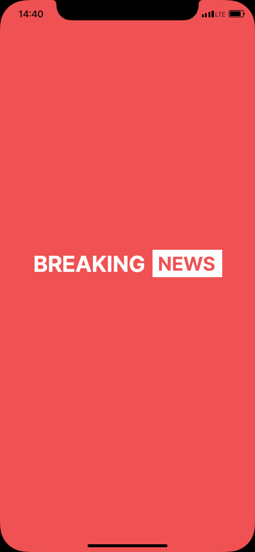
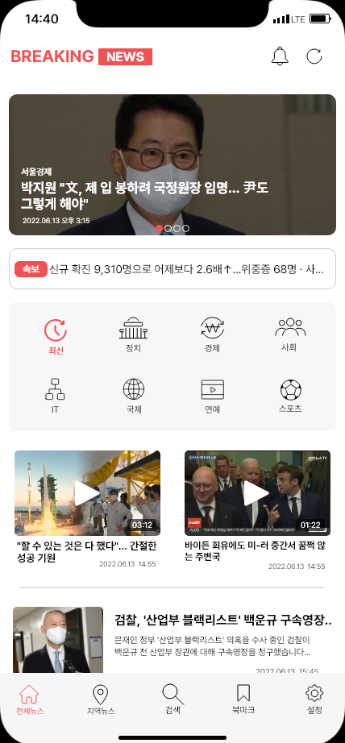

BREAKING NEWS
모바일 App
2022.05.02 ~ 2022.06.28
같이나아가조 ( 원서영, 조현비, 이윤진 )
- #Application
- #Mobile
- #XD
- #Zeplin
- #Team_Project


모바일 App
2022.05.02 ~ 2022.06.28
같이나아가조 ( 원서영, 조현비, 이윤진 )


기존의 앱을 사용해봤을 때, 사용자의 입장에서 불편하게 느껴지는 부분들이 있었다. 그래서 사용자가 보다 편리하고 접근하기 쉬운 디자인으로 제작하는 것에 중점을 두고 리디자인했다.

50%
직관적이지 않은 카테고리로 인해 사용자들이 원하는 뉴스를 빠르게 접하기 힘들다.
이미지가 지나치게 크고, 텍스트를 확인하기 어려운 구조로 이루어져 있어, 한눈에 기사를 파악하기가 어렵다.
방대한 양의 기사들을 무한한 스크롤로 제공하며, 지나친 기사의 경우 다시 찾기가 힘들다.
직관적인 구조와 디자인으로 변경하여 사용자들이 편하게 이용하도록 한다.
이미지 크기 조정 및 텍스트 중심의 구조로 보다 파악 하기 쉽게 변경한다.
방대한 정보들을 보다 편히 찾을 수 있도록 하단 탭바를 통하여 스크롤 시에도 검색이 가능하게 한다.
우리 조는 소통 및 팀워크가 좋았던 것 같다. 각자 맡은 부분에 대해서도 성실하게 수행하면서, 의견을 제시하고 받아들이는 데에 모두가 협조적이고 적극적으로 진행했다. 그래서 작업 속도도 비교적 빠르게 진행할 수 있었고, 덕분에 작업하며 생기는 새로운 이슈들을 수정하고 추가하는 것도 시간 안에 해결할 수 있었다.
또한 우리는 기존 앱의 UX VISION을 변경하고 새로 제시하는 방향으로 프로젝트를 진행했다. 때문에 이 부분에 대해 설득력이 있어야 했는데, 다른 사람들에게 충분히 이해될 수 있도록 xd와 ppt를 준비하여 발표함으로써 긍정적인 반응을 얻었다.
각 진행 단계를 넘어갈 때마다 팀원이 번갈아 가면서 자료 정리를 하다 보니, 매번 자료 작업을 다시 했던 것이 조금 아쉽다. 처음부터 담당을 정해 한 사람이 일관성 있게 정리할 수 있도록 했으면 좋았을 것 같다.
그리고 디자인적으로도 조금 평범하게 나온 점이 아쉽다. 아무래도 다른 앱들 보다 텍스트가 많고 중요한 앱이었다 보니까 다른 요소들은 최대한 덜어내다보니, 전반적으로 평이한 디자인이 된 것 같다.
우리가 선택한 앱은 컨텐츠는 많지만 구성이 부족한 앱이었다. 어려운 프로젝트였지만 그래도 이 앱을 고른 건 내용적인 면을 건들지 않아도 되어서 였는데, 지금 생각해보면 뉴스라는 것에 대해 다소 만만하게 생각한 게 아니었나 싶다. 생각보다 더 기존 뉴스 앱들의 틀에서 벗어나기 쉽지 않았고, 타 경쟁사처럼 아예 기사부터 건들지 않는 이상, 다양한 디자인이 나오기 힘들구나 라는 것을 느꼈다.
그래도 리서치 할 때 다른 분야의 앱들도 찾아보면서 이 앱에 어떻게 적용할 수 없을까 라는 고민을 계속 하면서 진행하려고 노력했다. 100% 만족하는 결과는 아니지만 그래도 팀원 모두가 노력해 최선의 결과물을 내었다고 생각한다. 이 프로젝트를 통해 좋은 경험을 하게 된 것 같고 앞으로의 작업에도 도움이 될 것 같다.